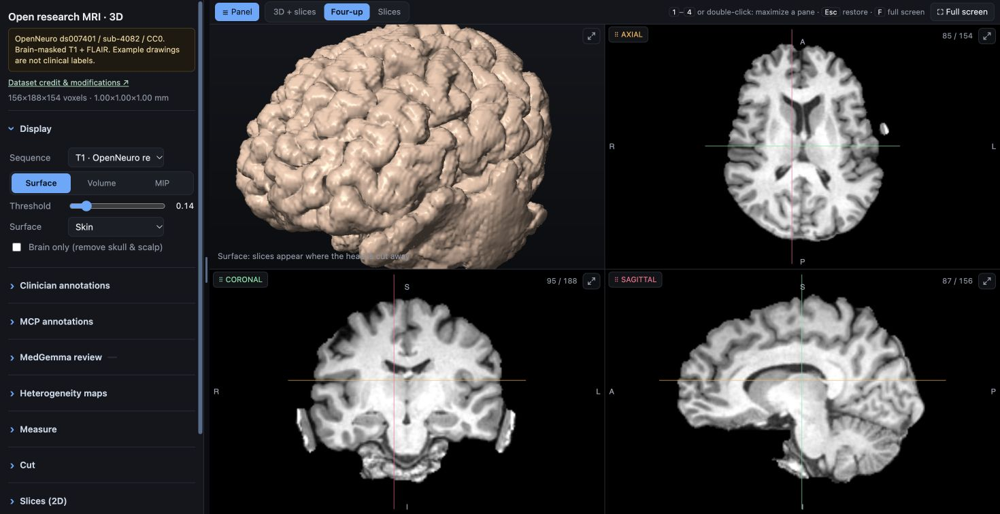
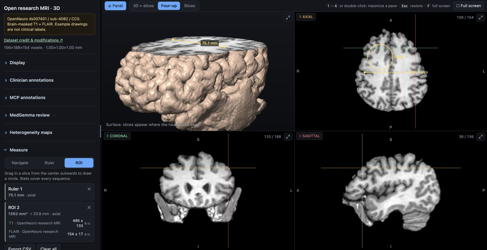

Multiplanar and volume review
Rotate the brain, move between linked slices and cut into the volume. Compare sequences at the same location.
Surface · Volume · MIPInteractive MRI overview · Load on demand
OPEN SOURCE · BUILT FOR BRAIN MRI
Review linked 2D and 3D images, take measurements, record observations and define regions of interest. Deliver the viewer through your existing patient or clinician portal.
No viewer installation. MIT application code. Your choice of model.
REVIEW TOOLS
These are captures of the actual application using an openly released MRI study. The notes, ruler and painted region illustrate the tools.

Rotate the brain, move between linked slices and cut into the volume. Compare sequences at the same location.
Surface · Volume · MIP
Place a ruler or circular ROI. Inspect sequence statistics and export the measurements as CSV.
Physical geometry · CSV export
Add your own text and a 2D or 3D location. Return to the observation and share it through a portable JSON export.
Browser drafts · JSON export
Paint and erase voxel masks on slices or with a 3D brush. Check them across views, undo a stroke and export your work.
Manual segmentation · Undo / redoPUBLIC RESEARCH DEMONSTRATION
Open a brain-masked T1 and FLAIR study from the OpenNeuro IDEAS II dataset. The same viewer handles your prepared institutional scans.
MRI images: OpenNeuro ds007401 / IDEAS II, released under CC0. T1 and FLAIR credit: Taylor et al., The imaging database for epilepsy and surgery (2025). Alignment, brain masking, display resampling and demonstration drawings were added here. No dataset-author endorsement is implied. Source, license and provenance →
IMAGING SERVICE INTEGRATION
Use your existing completed-export route for an institutional pilot, then add the adapters your workflow needs.
One completed DICOM study or verified NIfTI sequences.
Check roles, align images and build brain-oriented maps.
Provide the standalone viewer through your controlled portal.
Use clinician notes and masks, with optional AI drafts.
The included export watcher is serial. PACS networking, SSO, centralized notes and scalable workers are integration work.
See the export contract →OPTIONAL MODEL INTEGRATION
Connect a compatible local or hosted model through an MCP client. The interface follows the study; inference runs on the hardware and runtime you choose.

Sixteen tools expose slices, region crops, mirrored comparisons, statistics, viewer focus and review annotations.
Image review needs a vision-capable model and a client that handles image results and tool calls. A cloud provider receives the images sent to its model.
Configure the connection →MedGemma is Google's medical image-and-text model family. You can also connect another compatible model through the same MCP tools.
Choose a suitable runtime: a GPU server, a local computer running a vision model through llama.cpp, or another supported deployment. NVIDIA hardware is an option; the viewer does not depend on a particular accelerator.
Model memory, image support and tool routing depend on the chosen runtime. The included bounded review runner is one example implementation; check its backend requirements separately.
Plan model integration →IMPLEMENTATION SCOPE
The current asymmetry map compares aligned cerebral hemispheres. Other anatomy needs its own masks, alignment and evaluation.
Anatomical scope →The viewer contains the scan. Your portal supplies access controls. Browser drafts remain local until exported.
Data flow and sharing →MIT code you can inspect, adapt and integrate. Model weights have their own terms. Infrastructure and integration still have costs.
Licensing →COMMON QUESTIONS
No dedicated viewer installation is needed to open a prepared HTML in a supported browser. The institution installs the preparation tools on its processing workstation.
Yes, through a compatible MCP client. A model that inspects MRI images needs vision support; the client must route tool requests and image responses. The model runtime and accelerator are separate from the browser viewer.
Inference runs in a separate model runtime. The browser displays the scan, your annotations and saved model evidence. Use a local runtime or an institution-approved hosted service.
This release supports viewer delivery and a research pilot. PACS networking, authenticated records and clinical validation need additional integration.
The implemented analysis is brain-specific. Other anatomy needs appropriate masking, alignment and independent evaluation.
Export notes and masks as JSON and import them into the same scan in another browser. Drafts do not automatically synchronize; DICOM SEG export and central records need additional development.
INTEGRATION DOCUMENTATION
Public repository URL pending. Source & clone instructions · Contact the maintainer ↗